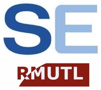
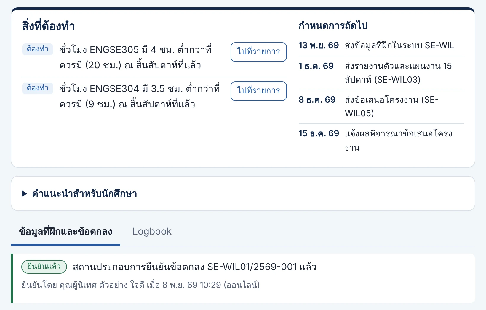
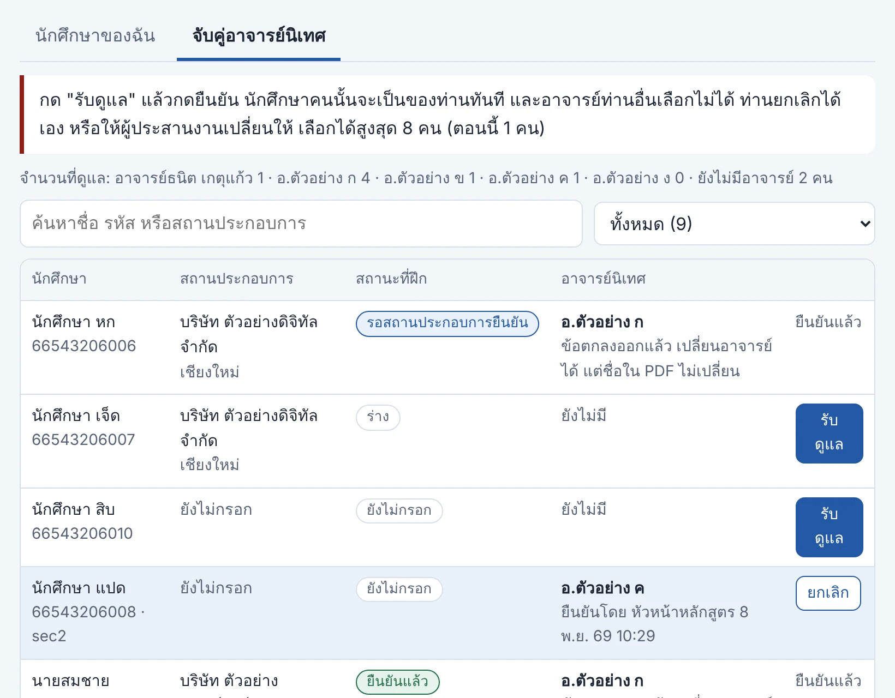
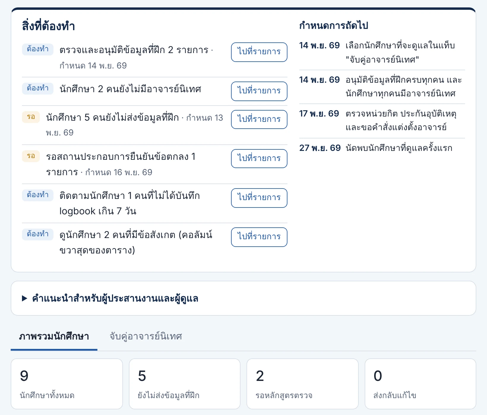
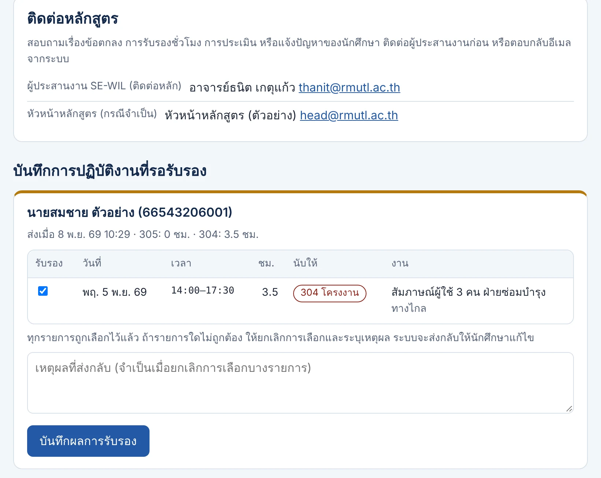

การจัดการเรียนการสอน ENGSE304 และ ENGSE305 ภาคการศึกษาที่ 2/2569
ชุดคู่ขนาน: สองวิชา ที่ฝึกเดียว ข้อตกลงฉบับเดียว เกรดแยกกัน พร้อมระบบสนับสนุน SE-WIL
สิ่งที่ขอจากที่ประชุมวันนี้
1 · รับทราบและมีมติ
รับแนวปฏิบัติชั่วคราวของ ENGSE304–305 แบบชุดคู่ขนาน แล้วแจ้งคณะเพื่อทราบ
กำหนด 9–11 พ.ย. 2569
2 · มอบหมายอาจารย์
ส่งรายชื่ออาจารย์นิเทศ อาจารย์เข้าระบบ SE-WIL และเลือกนักศึกษาที่จะดูแลเอง
ภายใน 14 พ.ย. 2569
3 · พิจารณา 9 เรื่อง
หน่วยกิตขั้นต่ำ ฐานชั่วโมง ENGSE304 ประกันอุบัติเหตุ ข้อสัญญา IP คำสั่งแต่งตั้ง และอื่น ๆ
ส่วนใหญ่ภายใน 13–17 พ.ย.
หัวข้อที่นำเสนอ
- ภาพรวมชุดคู่ขนาน ข้อกำหนด และบทบาท
- ก่อนเปิดภาค ปฏิทิน 16 สัปดาห์ และ logbook
- การประเมิน กติกาแยกหลักฐาน และกรณีพิเศษ
- ระบบ SE-WIL และการคุ้มครองข้อมูลส่วนบุคคล
- สิ่งที่หลักสูตรต้องทำ และเรื่องที่ต้องตัดสินใจ
- ลิงก์ไปยังพอร์ทัล ระบบ และเอกสาร
สิ่งที่พร้อมแล้ว และสิ่งที่ยังรอ
- พอร์ทัลรายวิชา: ปฏิทิน คู่มือแยกบทบาท แบบฟอร์ม คำถามพบบ่อย
- ระบบ SE-WIL: ข้อมูลที่ฝึก ข้อตกลง SE-WIL01 เป็น PDF และ logbook
- อาจารย์เลือกนักศึกษาที่จะดูแลเองในระบบ
- รายการสิ่งที่ต้องทำและคำแนะนำของทุกบทบาท
- รายชื่อนักศึกษารุ่น 66 อยู่ในระบบแล้ว
- มติกรรมการบริหารหลักสูตร และรายชื่ออาจารย์นิเทศ
- คำสั่งแต่งตั้ง ประกันอุบัติเหตุ และหน่วยกิตขั้นต่ำ
กำหนดการก่อนเปิดภาค
| 9–11 พ.ย. | มติรับแนวปฏิบัติ · นักศึกษาเริ่มกรอกข้อมูลที่ฝึก |
| 13 พ.ย. | นักศึกษาส่งข้อมูลที่ฝึกครบ |
| 14 พ.ย. | อาจารย์เลือกนักศึกษาครบ · อนุมัติและส่งข้อตกลงครบ |
| 16 พ.ย. | สถานประกอบการยืนยันข้อตกลง SE-WIL01 |
| 17 พ.ย. | ตรวจหน่วยกิต ประกันอุบัติเหตุ คำสั่งแต่งตั้ง |
| 18 พ.ย. | เปิดภาค ลงทะเบียน ปฐมนิเทศ เริ่ม logbook |
สองวิชา ที่ฝึกเดียว ข้อตกลงฉบับเดียว เกรดแยกกัน
การฝึกเฉพาะตำแหน่ง
Practicum · 3(0-20-0)
20 ชม./สัปดาห์ × 15 สัปดาห์
วัดสมรรถนะในตำแหน่งจริง ความรับผิดชอบ การทำงานร่วมกับผู้อื่น และการสะท้อนการเรียนรู้
ปัญหาพิเศษจากสถานประกอบการ
Workplace Special Problem · 3(0-6-3)
รวมเวลาศึกษาด้วยตนเองที่บันทึกไว้
วัดการแก้ปัญหาจริง: นิยามปัญหา ความต้องการ การออกแบบ โค้ด การทดสอบ และคุณค่าต่อสถานประกอบการ
18 พ.ย. 2569 – 9 มี.ค. 2570 · 16 สัปดาห์ · รวม 6 หน่วยกิต · ให้ระดับคะแนน A–F แยกสองวิชาตามเล่มหลักสูตร · หลักสูตรเป็นผู้ดำเนินการเอง
ชั้นปีที่ 4 อยู่ในสถานประกอบการตลอดปีการศึกษา
1(0-3-1) ไม่นับหน่วยกิต
เต็มเวลา ≥15 สัปดาห์ · ประเมิน S/U
ข้อตกลงฉบับเดียว นิเทศครั้งเดียว เกรด A–F แยกกัน
เหตุผลที่เลือกชุดคู่ขนาน
- ไม่ต้องแก้เล่มหลักสูตร คงสองวิชาและระบบเกรดตามที่อนุมัติ (304/305 ไม่มีหมายเหตุ S/U)
- ตรงคำอธิบายรายวิชา บุคลากรสถานประกอบการมีส่วนร่วม และฝึกควบคู่กับการเรียนได้
- ลดภาระ ลงนามครั้งเดียว นิเทศครั้งเดียวครอบคลุมสองวิชา
- ตรงแนวทาง WIL ระดับชาติ Practicum ไม่น้อยกว่า 1 ภาค 6 หน่วยกิต
- มีตัวอย่างใกล้เคียง มทร.ศรีวิชัย วิทยาลัยรัตภูมิ และ มทส.
- ยังไม่พบหลักสูตรอื่นที่ใช้ชื่อสองวิชานี้ หลักสูตรจึงเขียนแนวปฏิบัติเอง
กฎหมายบังคับไม่กี่เรื่อง รายละเอียดหลักสูตรกำหนดเอง
| ระดับ | ข้อกำหนด | ผลต่อ ENGSE304/305 |
|---|---|---|
| บังคับ | ฝึกงานและโครงงาน 45 ชม. ต่อหน่วยกิต ภาคปกติ ≥15 สัปดาห์ (กฎกระทรวง 2565 · ประกาศ กมอ. 2565) | 305 = 300 ชม. เกินเกณฑ์ · 304 ตามตาราง 90 ชม. ต้องบันทึกรวมศึกษาเองให้ได้ ≥135 ชม. |
| บังคับ | รายวิชาที่ใช้อาจารย์พิเศษต้องมีอาจารย์ประจำร่วมรับผิดชอบตลอดภาค | สถานประกอบการประเมินร่วม อาจารย์ประจำเป็นผู้ให้ระดับคะแนน |
| บังคับ | ไม่เกิน 22 หน่วยกิตต่อภาค ระบบระดับคะแนน 4 ระดับ · ผลลัพธ์การเรียนรู้และรายงานผลรายวิชา | ใช้ A–F ตามเล่ม · ต้องมีรายละเอียดและรายงานผลรายวิชา |
| แนะนำ | Practicum ≥1 ภาค 6 หน่วยกิต · WIL รวม ≥1 ปีการศึกษา | ชุด 304+305 = 6 หน่วยกิตในภาคเดียว ปี 4 ทั้งปีเป็น WIL |
| ร่าง | นิเทศ ≥1 ครั้ง ครั้งละ ≥1 ชม. · ประเมินร่วมสองฝ่าย · อนุญาตเผยแพร่ · ข้อตกลง IP · อบรมความปลอดภัย | ใช้เป็นมาตรฐานขั้นต่ำของหลักสูตร |
| ไม่พบ | เปลี่ยนสถานประกอบการระหว่างภาค · ประกันอุบัติเหตุ · PDPA · ทำงานทางไกล · สัดส่วนคะแนน | หลักสูตรกำหนดเอง |
ผู้เกี่ยวข้องชุดเดียว แต่คะแนนเดินคนละเส้นทาง
หัวหน้าหลักสูตร
ลงนามข้อตกลงในนามหลักสูตร อนุมัติคำร้อง SE-WIL02 และชุดกรรมการสอบ รับรองผลการเรียน
ผู้ประสานงาน SE-WIL
ผู้ติดต่อหลัก ดูแลระบบ ตรวจและอนุมัติข้อมูลที่ฝึก ติดตามการรับรอง รวมคะแนน
อาจารย์ผู้รับผิดชอบรายวิชา
อาจารย์ประจำ ควรแยกคนละคน ดูแล logbook หรือการสอบ และให้ระดับคะแนน
อาจารย์นิเทศ / ที่ปรึกษาโครงงาน
คนเดียวกันต่อกลุ่มที่อยู่ที่เดียวกัน นิเทศ ≥1 ครั้ง อนุมัติข้อเสนอ ติดตามทุก 2 สัปดาห์
ผู้นิเทศงาน 305
มอบหมายงานตามตำแหน่ง รับรอง logbook ทุกสัปดาห์ ประเมินกลางภาคและปลายภาค
ที่ปรึกษาร่วม 304
รับรองโจทย์ ร่วมทบทวนงาน ประเมินคุณค่าผลงาน อนุญาตเผยแพร่ อาจเป็นคนเดียวกับผู้นิเทศงาน
คณะ / งานบริการการศึกษา
หนังสือขอความอนุเคราะห์และส่งตัว คำสั่งแต่งตั้งอาจารย์ ประกันอุบัติเหตุ
นักศึกษา รุ่น 66
บันทึก logbook ทุกวัน ส่งข้อเสนอ สิ่งประดิษฐ์ รายงานสองฉบับ เข้าสอบ
ภาระอาจารย์ที่เสนอ: อาจารย์หนึ่งคนดูแลไม่เกิน 8 คนในสองบทบาท และจัดกลุ่มตามสถานประกอบการ เพื่อให้นิเทศครั้งเดียวพบได้หลายคน
ยืนยันที่ฝึกก่อนลงทะเบียน (สัปดาห์ที่ 0)
SE-WIL01 ต้องระบุ
- ตำแหน่งงานและลักษณะงาน ENGSE305 พร้อมผู้นิเทศงาน
- โจทย์ 1–2 หัวข้อของ ENGSE304 พร้อมที่ปรึกษาร่วม
- รูปแบบการทำงานและตารางขั้นต่ำ 20 + 6 ชม./สัปดาห์
- ความเป็นเจ้าของผลงาน ความลับ PDPA และค่าตอบแทน (ถ้ามี)
ระบบทำให้
- อนุมัติแล้วระบบสร้าง PDF ข้อตกลง ส่งอีเมลถึงผู้นิเทศงานพร้อมลิงก์เฉพาะคน และสำเนาถึงนักศึกษา
- ยืนยันออนไลน์ได้ทันที หรือลงนามในเอกสารแล้วผู้ประสานงานบันทึก
- นักศึกษาที่เปลี่ยนจากที่ฝึก ENGSE301 ใช้ SE-WIL01 ฉบับใหม่ ไม่ต้องใช้ SE-WIL02
ปฏิทิน 16 สัปดาห์ (18 พ.ย. 2569 – 9 มี.ค. 2570)
- ส่งข้อมูลที่ฝึกในระบบ
- สถานประกอบการยืนยัน SE-WIL01
- เปิดภาค ลงทะเบียน ปฐมนิเทศ
- รับรอง logbook ครั้งแรก
- รายงานตัวและแผนงาน SE-WIL03 305
- ข้อเสนอโครงงาน SE-WIL05 304
- แจ้งผลพิจารณาข้อเสนอ 304
- นิเทศครั้งที่ 1 และประชุมสามฝ่ายครบทุกคน (สัปดาห์ 5–7)
- อาจารย์ประชุมปรับเทียบเกณฑ์
- สมรรถนะกลางภาค SE-WIL08 305 · ทบทวนความก้าวหน้า 304
- รายงานความก้าวหน้า SE-WIL07 304
- วันสุดท้ายถอนรายวิชาโดยได้ W
- ร่างรายงานและรายงานการทดสอบ 304
- สมรรถนะปลายภาค · สะท้อนการเรียนรู้ 305 · สาธิตและคุณค่าผลงาน SE-WIL09 304
- แฟ้มผลงาน · สอบปากเปล่า · รายงานฉบับสมบูรณ์
- สรุปคะแนนและส่งผลการเรียน
ตารางรายสัปดาห์และวงรอบ logbook
ร่างตารางสำหรับงานทะเบียน
มหาวิทยาลัย
ตารางจริงตกลงกับสถานประกอบการใน SE-WIL01 ขั้นต่ำ 20 ชม./สัปดาห์สำหรับงานตามตำแหน่ง และ 6 ชม./สัปดาห์สำหรับโครงงาน ณ สถานประกอบการ
ชม. ENGSE305
ชม. ENGSE304 (90 ตามตาราง + ศึกษาเอง)
วงรอบ logbook ในระบบ SE-WIL
- วันลาไม่นับ ต้องได้รับอนุมัติจากผู้นิเทศงานและอาจารย์ · ห้ามหยุดงานเองโดยไม่แจ้ง
- วันทำงานทางไกลนับได้เมื่อผู้นิเทศงานรับรองสัปดาห์นั้น · บันทึกได้ไม่เกิน 12 ชม./วัน
ENGSE305 วัดสมรรถนะในตำแหน่ง
| องค์ประกอบ | % | ผู้ประเมิน | สัปดาห์ |
|---|---|---|---|
| สมรรถนะกลางภาค (เชิงพัฒนา) SE-WIL08 | 10 | ผู้นิเทศงาน | 8 |
| สมรรถนะปลายภาค SE-WIL08 | 30 | ผู้นิเทศงาน | 14 |
| การนิเทศและประชุมสามฝ่าย SE-WIL06 ก | 20 | อาจารย์นิเทศ | 5–7 |
| logbook และงานรายสัปดาห์ SE-WIL04 | 15 | อ.ผู้รับผิดชอบ | ทุกสัปดาห์ |
| รายงานสะท้อนการเรียนรู้ SE-WIL12 | 15 | อาจารย์นิเทศ | 14 |
| นำเสนอแฟ้มผลงาน | 10 | อาจารย์ 2 คน | 15 |
เงื่อนไขผ่าน
- ชั่วโมงที่รับรองแล้วครบ 300 ชม. ขาดเพราะลาที่อนุมัติ ชดเชยในภาค ไม่ทันให้ I
- ส่วนผู้นิเทศงานและส่วนอาจารย์นิเทศได้ไม่ต่ำกว่าครึ่งของแต่ละส่วน
- แบบประเมินจากสถานประกอบการมาไม่ทัน ให้ I ไม่ใช่ F
- น้ำหนักฝั่งสถานประกอบการ 40% เพราะคะแนนจากนายจ้างมักกระจุกใกล้เพดาน
ENGSE304 วัดการแก้ปัญหาด้วยวิศวกรรมซอฟต์แวร์
| องค์ประกอบ | % | ผู้ประเมิน | สัปดาห์ |
|---|---|---|---|
| ข้อเสนอ: ปัญหาที่รับรอง ขอบเขต ≥135 ชม. ความเสี่ยง | 10 | ที่ปรึกษา + กรรมการ | 4 |
| ความก้าวหน้า: SRS (ISO/IEC/IEEE 29148) การออกแบบ | 15 | กรรมการ | 8 |
| สิ่งประดิษฐ์: โค้ด แผนและรายงานการทดสอบ RTM | 25 | ที่ปรึกษา | 13–15 |
| คุณค่าของผลงานต่อสถานประกอบการ SE-WIL09 | 20 | ที่ปรึกษาร่วม | 14 |
| รายงานฉบับสมบูรณ์ พร้อม SE-WIL11 | 15 | ที่ปรึกษา | 15 |
| สอบปากเปล่าและสาธิต | 15 | อาจารย์ ≥2 + ผู้แทน | 15 |
เงื่อนไขผ่าน
- บันทึกชั่วโมงโครงงาน ≥135 ชม.
- คะแนนสอบปากเปล่าและสาธิตได้ไม่ต่ำกว่าครึ่ง
- รายงานผ่านการตรวจความซ้ำซ้อน
- โครงงานทีมไม่เกิน 3 คน ที่เดียวกัน มีหลักฐานรายบุคคล เช่น ประวัติ commit
งานชิ้นเดียวต้องไม่ได้สองเกรด
- แท็กชั่วโมง ทุกรายการเป็น 305 งานตามตำแหน่ง หรือ 304 โครงงาน นับได้ครั้งเดียว
- งานประจำที่ใช้เป็นโครงงาน ต้องระบุในข้อเสนอที่อนุมัติ นับจากวันนั้นชั่วโมงเป็นของ 304
- แบบประเมิน 305 ไม่มีข้อคุณภาพโครงงาน · 304 ไม่มีข้อตรงต่อเวลาหรือวินัย
- รายงานสองฉบับ สะท้อนการเรียนรู้ (305) และรายงานโครงงาน (304)
- ให้คะแนนแยก แม้อาจารย์คนเดียวทำสองบทบาท ใช้คนละแบบฟอร์ม คนละช่วงเวลา
ช่วงคะแนนของมหาวิทยาลัย
| ระดับ | A | B+ | B | C+ | C | D+ | D | F |
|---|---|---|---|---|---|---|---|---|
| คะแนน | 80–100 | 75–79 | 70–74 | 65–69 | 60–64 | 55–59 | 50–54 | 0–49 |
ผู้นิเทศงานและที่ปรึกษาร่วมให้คะแนนประกอบ ผู้ให้ระดับคะแนนคืออาจารย์ประจำผู้รับผิดชอบรายวิชา
เปลี่ยนที่ฝึก ยุติการฝึก และทำงานทางไกล
เปลี่ยนจากที่ฝึก ENGSE301 (ก่อนเปิดภาค)
- ค่าเริ่มต้นคือที่เดิม
- เปลี่ยนได้ด้วย SE-WIL01 ฉบับใหม่ ที่ยืนยันภายใน 16 พ.ย.
- ไม่ต้องใช้ SE-WIL02 · ระบบบังคับกรอกเหตุผล
- ที่ใหม่ไม่มีโจทย์ ใช้โจทย์ที่เดิมได้ อาจารย์อนุมัติรายกรณี
เปลี่ยนหรือยุติระหว่างภาค
- ต้องยื่น SE-WIL02 กรรมการบริหารหลักสูตรอนุมัติ
- ขอย้ายเอง: ไม่อนุญาต เว้นแต่เจ็บป่วยหรือจำเป็นเร่งด่วนและมีหลักฐาน
- บริษัทถอนตัว: ชั่วโมง 305 ที่รับรองนับต่อ 304 ปรับขอบเขต ไม่ทันให้ I หรือถอน W ก่อนสัปดาห์ 12
- ถูกยุติเพราะความประพฤติ: สอบข้อเท็จจริงก่อน
ทำงานทางไกลหรือแบบผสม
- ระบุรูปแบบใน SE-WIL01
- นับชั่วโมงเมื่อผู้นิเทศงานรับรอง logbook
- ENGSE304 นัดติดตามออนไลน์พร้อมกันทุก 2 สัปดาห์
- นิเทศ ณ สถานที่ ≥1 ครั้ง หรือผ่านวิดีโอพาชมที่ทำงานจริง
คำร้อง SE-WIL02 ในระบบยังไม่มี ถ้าเกิดกรณีจริงก่อนระบบพร้อม ใช้แบบฟอร์มของหลักสูตร แล้วผู้ประสานงานแก้ข้อมูลในระบบตามมติ
ชุดแบบฟอร์ม SE-WIL01–12 และสถานะในระบบ
| รหัส | แบบฟอร์ม | สัปดาห์ | ในระบบ |
|---|---|---|---|
| 01 | ข้อตกลงการฝึก (TOR รวมสองวิชา) | 0 | เปิดแล้ว |
| 02 | คำร้องขอเปลี่ยนหรือยุติการฝึก | เมื่อเกิดเหตุ | ยังไม่มี |
| 03 | รายงานตัวและแผนงาน 15 สัปดาห์ 305 | 1–2 | แม่แบบ |
| 04 | logbook รายวัน รับรองรายสัปดาห์ | 1–16 | เปิดแล้ว |
| 05 | ข้อเสนอโครงงาน 304 | 3 | 2 ธ.ค. |
| 06 | บันทึกการนิเทศ (ส่วน ก / ข) | 5–7, 11–12 | 16 ธ.ค. |
| รหัส | แบบฟอร์ม | สัปดาห์ | ในระบบ |
|---|---|---|---|
| 07 | รายงานความก้าวหน้า 304 | 10 | แม่แบบ |
| 08 | ประเมินสมรรถนะโดยผู้นิเทศงาน 305 | 8, 14 | 6 ม.ค. |
| 09 | ประเมินคุณค่าผลงานโดยที่ปรึกษาร่วม 304 | 14 | 6 ม.ค. |
| 10 | เกณฑ์ประเมินโครงงาน 304 | 4, 8, 15 | 17 ก.พ. |
| 11 | อนุญาตเผยแพร่และตรวจเนื้อหาลับ 304 | 13–15 | แม่แบบ |
| 12 | รายงานสะท้อนการเรียนรู้ 305 | 14 | แม่แบบ |
วันที่ในคอลัมน์ "ในระบบ" คือกำหนดที่ส่วนนั้นต้องพร้อมใช้ · "แม่แบบ" = ส่งเป็นไฟล์ตามแม่แบบในหน้าแบบฟอร์มของพอร์ทัล
ระบบของหลักสูตรเอง เพราะระบบสหกิจของคณะยังไม่รองรับสองวิชานี้
พอร์ทัลรายวิชา
เว็บสาธารณะ: ปฏิทิน คู่มือแยกบทบาท แบบฟอร์ม คำถามพบบ่อย ผู้ติดต่อ เอกสารแนวคิด ไม่มีข้อมูลรายคน
ระบบ SE-WIL
เว็บแอป Google Apps Script: ข้อมูลที่ฝึก ข้อตกลง logbook การรับรอง จับคู่อาจารย์ สิ่งที่ต้องทำของแต่ละบทบาท
ข้อมูลของหลักสูตร
ในบัญชีของหลักสูตร: ข้อตกลง PDF CV รูป บันทึกการใช้งาน (Audit) อีเมลอัตโนมัติ และสรุปทุกวันศุกร์
ระดับคะแนนสุดท้ายยังกรอกในระบบทะเบียนของมหาวิทยาลัยตามเดิม · ระบบใช้ไฟล์ข้อมูลหนึ่งไฟล์ต่อภาค แต่ใช้ URL เดิมทุกภาค
นักศึกษา: กรอกที่ฝึก ดูผู้ติดต่อ และบันทึก logbook

- สิ่งที่ต้องทำ ระบบเตือนจากสถานะจริง เช่น ยังไม่ส่งข้อมูล ชั่วโมงต่ำกว่าเป้า รายการถูกส่งกลับ
- ข้อมูลที่ฝึก สถานประกอบการ แผนที่ ผู้นิเทศงาน ที่ปรึกษาร่วม โจทย์ ตารางเวลา แนบ CV
- ผู้ติดต่อของฉัน ผู้ประสานงานอยู่บรรทัดแรก เบอร์โทรเห็นเฉพาะผู้เกี่ยวข้อง
- Logbook แท็ก 305/304 เห็นชั่วโมงสะสมเทียบเป้า
- ภาพจากชุดข้อมูลทดสอบ
อาจารย์: เลือกนักศึกษาที่จะดูแลเอง

- เห็นทุกคนแบบย่อ ชื่อ รหัส sec สถานประกอบการ สถานะ ไม่มีเบอร์โทรหรือ CV
- รับดูแล → ยืนยัน ล็อกทันที อาจารย์ท่านอื่นเลือกไม่ได้
- ยกเลิกได้เอง หรือผู้ประสานงานเปลี่ยนให้ · บันทึกทุกครั้งใน Audit
- ไม่เกิน 8 คนต่ออาจารย์ ปรับได้ · ปิดการเลือกเองเมื่อจัดเสร็จ
- ควรเลือกตามสถานประกอบการ ภายใน 14 พ.ย. ชื่ออาจารย์จะพิมพ์ลงข้อตกลง
ผู้ประสานงาน: ภาพรวม การอนุมัติ และงานค้าง

- สิ่งที่ต้องทำ รายการรออนุมัติ นักศึกษาที่ยังไม่มีอาจารย์ ข้อตกลงที่ยังไม่ยืนยัน สรุปวันศุกร์ที่ไม่ได้ส่ง
- อนุมัติ ระบบสร้าง PDF และส่งอีเมลทันที · ส่งกลับพร้อมเหตุผล · ส่งข้อตกลงซ้ำ
- ภาพรวมชั่วโมง รับรองแล้ว รอรับรอง เทียบชั่วโมงที่ควรมี และธงเตือน
- ข้อมูลส่วนบุคคล เมนูลบ CV รูป และเบอร์นักศึกษาหลังพ้นช่วงอุทธรณ์
ผู้นิเทศงาน: ยืนยันข้อตกลงและรับรอง logbook ด้วยลิงก์เดียว

- ไม่ต้องสมัครหรือจำรหัสผ่าน ลิงก์เฉพาะคนในอีเมลใช้ได้ตลอดภาค เห็นเฉพาะนักศึกษาที่ตนดูแล
- อีเมลวันศุกร์ สรุปรายการรอรับรอง เลือกทั้งหมดไว้แล้ว ยกเลิกรายการที่ไม่ถูกพร้อมเหตุผล
- ติดต่อหลักสูตร ผู้ประสานงานเป็นผู้ติดต่อหลัก ตอบกลับอีเมลจากระบบได้
- ภาระต่อภาค รับรองสัปดาห์ละครั้ง ประชุมสามฝ่าย 1 ครั้ง แบบประเมิน 2 ครั้ง
เก็บเท่าที่จำเป็น เห็นเท่าที่เกี่ยวข้อง
| ข้อมูล | อาจารย์นิเทศ | อาจารย์อื่น | สถานประกอบการ |
|---|---|---|---|
| ชื่อ รหัส sec สถานประกอบการ สถานะ | เห็น | เห็น (เพื่อจับคู่) | เฉพาะที่ตนดูแล |
| เบอร์มือถือนักศึกษา (ไม่บังคับ) | เห็น | ไม่เห็น | ถ้านักศึกษาส่งเอง |
| CV (ไม่บังคับ) | เห็น | ไม่เห็น | ถ้านักศึกษาแนบ |
| รายละเอียดที่ฝึกและ logbook | เห็น | ไม่เห็น | เฉพาะที่ต้องรับรอง |
| เบอร์อาจารย์และผู้นิเทศงาน | ไม่บังคับ แสดงเฉพาะผู้เกี่ยวข้องเมื่อเจ้าของยินยอม | ||
- พอร์ทัลสาธารณะ ไม่มีเบอร์โทร CV หรือข้อมูลรายคน
- ไฟล์ไม่แชร์ CV และรูปเปิดผ่านระบบตามสิทธิ์ ทุกการเปิดบันทึกใน Audit
- นักศึกษาแก้หรือลบ เบอร์และ CV ของตนได้ทุกเมื่อ
- ลบหลังจบภาค CV รูป เบอร์นักศึกษา · เก็บข้อตกลง logbook คะแนนเป็นหลักฐาน
ประกาศฉบับเต็ม: พอร์ทัล หน้า "การคุ้มครองข้อมูลส่วนบุคคล" · คำขอเรื่องข้อมูลส่วนบุคคลติดต่อผู้ประสานงาน SE-WIL
ระบบเพิ่มทีละส่วนตามสัปดาห์ที่ต้องใช้ บน Apps Script
หน้าเดิม แท็บเพิ่ม
ทุกบทบาทเปิดระบบแล้วเจอสิ่งที่ต้องทำ กำหนดการถัดไป และคำแนะนำ แท็บงานเพิ่มตามสัปดาห์ ผู้นิเทศงานใช้ลิงก์เดิมตลอดภาค
คะแนนรวม
เก็บรายองค์ประกอบ ผู้ให้คะแนนคนเดียวต่อองค์ประกอบ อาจารย์ตรวจก่อน ผู้ประสานงานยืนยันผลแล้วส่งออกไฟล์
ปิดภาคและเริ่มภาคใหม่
ปิดภาค = อ่านอย่างเดียว · สำเนาไฟล์ข้อมูลเก็บไว้ · ล้างข้อมูลรายภาค ใช้ URL และลิงก์สั้นเดิม
สิ่งที่หลักสูตรและอาจารย์ต้องทำ
| งาน | ผู้รับผิดชอบ | กำหนด |
|---|---|---|
| มติรับแนวปฏิบัติชั่วคราว แจ้งคณะเพื่อทราบ | กรรมการบริหารหลักสูตร | 9–11 พ.ย. |
| ส่งรายชื่ออาจารย์นิเทศ ผู้ประสานงานใส่ในระบบ | หัวหน้าหลักสูตร | 12 พ.ย. |
| อาจารย์เข้าระบบ เลือกนักศึกษาที่จะดูแล | อาจารย์นิเทศทุกท่าน | 14 พ.ย. |
| ตรวจและอนุมัติข้อมูลที่ฝึก ส่งข้อตกลง SE-WIL01 | ผู้ประสานงาน | 14 พ.ย. |
| ตรวจหน่วยกิต ประกันอุบัติเหตุ ขอคำสั่งแต่งตั้ง | หัวหน้าหลักสูตร คณะ | 17 พ.ย. |
| ปฐมนิเทศออนไลน์ 2–3 ชั่วโมง | ผู้ประสานงาน อาจารย์ | สัปดาห์ 1 |
| นัดพบนักศึกษาครั้งแรก · พิจารณาข้อเสนอโครงงาน | อาจารย์นิเทศ | 27 พ.ย. · 15 ธ.ค. |
| นิเทศครั้งที่ 1 ครบทุกคน · ประชุมปรับเทียบเกณฑ์ | อาจารย์นิเทศ | 5 ม.ค. |
| สอบปากเปล่า (อาจารย์ ≥2) · สรุปคะแนน ส่งผล | อาจารย์ ผู้รับผิดชอบรายวิชา | 2 · 9 มี.ค. |
เรื่องที่ขอให้ที่ประชุมพิจารณา
| # | เรื่อง | สิ่งที่พบ | ผู้ตัดสิน | กำหนด |
|---|---|---|---|---|
| 1 | หน่วยกิตขั้นต่ำต่อภาค | คู่มือกำหนด 9–22 หน่วยกิต ภาคนี้มี 6 ถามงานทะเบียนว่าใช้ข้อยกเว้นใด | หัวหน้าหลักสูตร งานทะเบียน | 13 พ.ย. |
| 2 | ฐานชั่วโมง ENGSE304 | ตามตาราง 90 ชม. ถ้านับเป็นโครงงานต้อง 135 ชม. | กรรมการบริหารหลักสูตร | 13 พ.ย. |
| 3 | เส้นทางอนุมัติแนวปฏิบัติ | มติกรรมการ แล้วเสนอคณะ ตรวจกับคู่มือรายวิชาของคณะ (2568) | หัวหน้าหลักสูตร คณบดี | สัปดาห์ 1–2 |
| 4 | ประกันอุบัติเหตุ | ตรวจว่ากรมธรรม์ของมหาวิทยาลัยคุ้มครองการฝึกนอกสถานที่หรือไม่ | คณะ | 17 พ.ย. |
| 5 | ข้อสัญญา IP ความลับ PDPA | ยังไม่พบแม่แบบของหลักสูตรคอมพิวเตอร์ไทย ควรปรึกษานิติกร | กรรมการบริหารหลักสูตร | ก่อนส่ง SE-WIL01 |
| 6 | คำสั่งแต่งตั้งและภาระอาจารย์ | อาจารย์ 1 คนดูแล ≤8 คนในสองบทบาท งบเดินทางนิเทศ 1 รอบ | หัวหน้าหลักสูตร คณะ | 17 พ.ย. |
| 7 | สถานะข้อบังคับการศึกษา | ยืนยันกฎเรื่อง I W และหน่วยกิตขั้นต่ำ | หัวหน้าหลักสูตร | สัปดาห์ 1 |
| 8 | การอบรมผู้นิเทศ | ร่าง สป.อว. ให้อาจารย์นิเทศผ่านการอบรมจากหน่วยงานที่รับรอง | หัวหน้าหลักสูตร | ในปีการศึกษา |
| 9 | รอบปรับปรุงหลักสูตร | รวม 304+305 เป็น Practicum เดียว หรือเป็น S/U · ปรับ ENGSE301 เป็น ≥16 สัปดาห์ | สภาวิชาการ สภามหาวิทยาลัย | รอบปรับปรุง |
ลิงก์ไปยังระบบและเอกสาร
นักศึกษาและอาจารย์ขอลิงก์เข้าระบบด้วยอีเมลมหาวิทยาลัย
ปฏิทิน คู่มือแยกบทบาท แบบฟอร์ม ผู้ติดต่อ
ขอความเห็นและมติจากที่ประชุม
รับแนวปฏิบัติชั่วคราว · ส่งรายชื่ออาจารย์นิเทศภายใน 12 พ.ย. · พิจารณาเรื่องที่ต้องตัดสินใจ 9 เรื่อง
thanit@rmutl.ac.th · rmutl.link/sewil · se-rmutl.github.io/se-wil
คณะวิศวกรรมศาสตร์ มหาวิทยาลัยเทคโนโลยีราชมงคลล้านนา